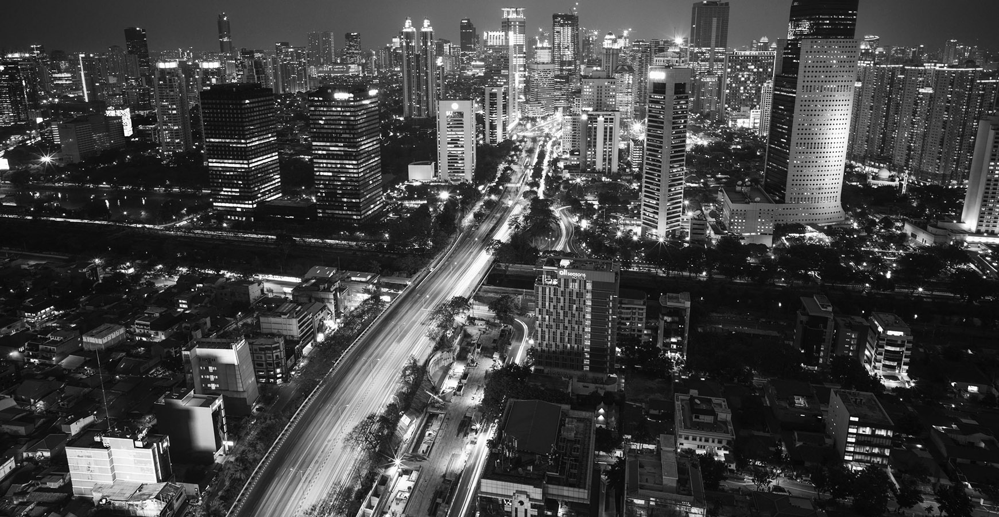
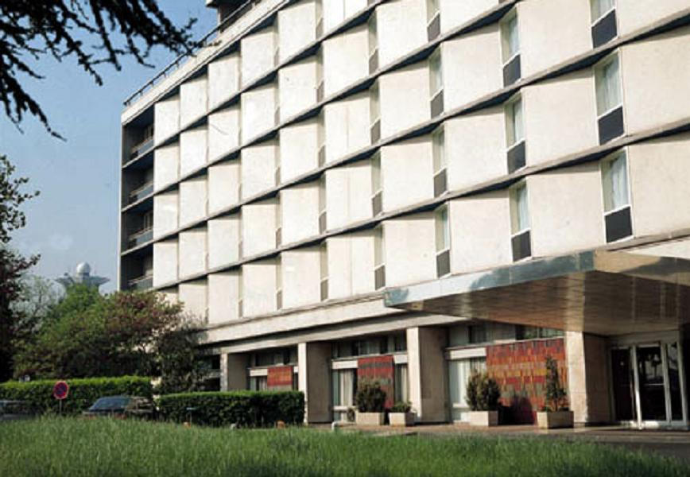
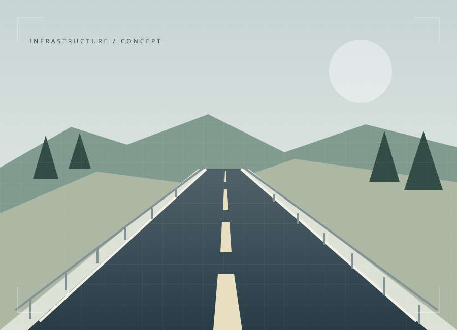
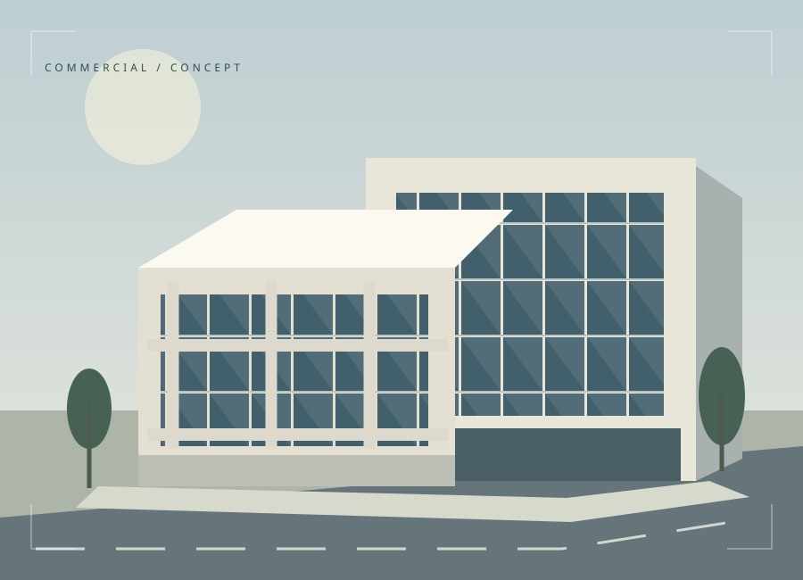

/ 01
Konstruksi Gedung
Pembangunan hunian, perkantoran, dan bangunan komersial dengan perhatian pada setiap detail.
Pelajari layanan
Menghadirkan solusi konstruksi sipil yang terencana, berkualitas, dan berorientasi pada kebutuhan Anda.
Ketelitian dalam setiap tahapan kerja.
Budaya kerja yang aman dan bertanggung jawab.
Komunikasi jelas dari awal hingga akhir.

PT Ikhtiyar Karya Putra hadir untuk menjadi bagian dari perjalanan pembangunan Anda. Kami percaya, hasil yang baik dimulai dari perencanaan yang matang dan hubungan kerja yang saling percaya.
Dari pekerjaan sipil hingga pembangunan gedung, setiap detail adalah bagian dari komitmen kami untuk menghadirkan nilai yang bertahan lama.
Kebutuhan yang berbeda memerlukan pendekatan yang tepat. Temukan layanan untuk rencana pembangunan Anda.
Pembangunan hunian, perkantoran, dan bangunan komersial dengan perhatian pada setiap detail.
Pelajari layananPekerjaan jalan, drainase, dan fasilitas pendukung untuk konektivitas yang lebih baik.
Pelajari layananPembaruan dan pengembangan ruang untuk fungsi yang lebih optimal dan berkelanjutan.
Pelajari layananKoordinasi kebutuhan teknis, anggaran, dan tahapan kerja sebagai fondasi pelaksanaan.
Pelajari layananKonstruksi Gedung
Struktur, arsitektur, dan penyelesaian akhir.

Konsep proyekInfrastruktur Sipil
Akses yang terencana, konektivitas yang lebih baik.

Konsep proyekBangunan Komersial
Ruang usaha yang fungsional dan adaptif.
Portofolio di atas merupakan konsep ilustratif, bukan dokumentasi proyek aktual PT Ikhtiyar Karya Putra.
Alur kerja yang jelas membantu setiap pihak melangkah dengan tujuan yang sama.
Mendengarkan tujuan, kebutuhan ruang, dan harapan Anda.
Menyelaraskan lingkup, pendekatan teknis, dan tahapan kerja.
Melaksanakan pekerjaan dengan koordinasi dan kontrol mutu.
Meninjau hasil bersama dan menyelesaikan setiap detail.
Ceritakan kebutuhan Anda. Mari temukan langkah terbaik untuk mewujudkannya.